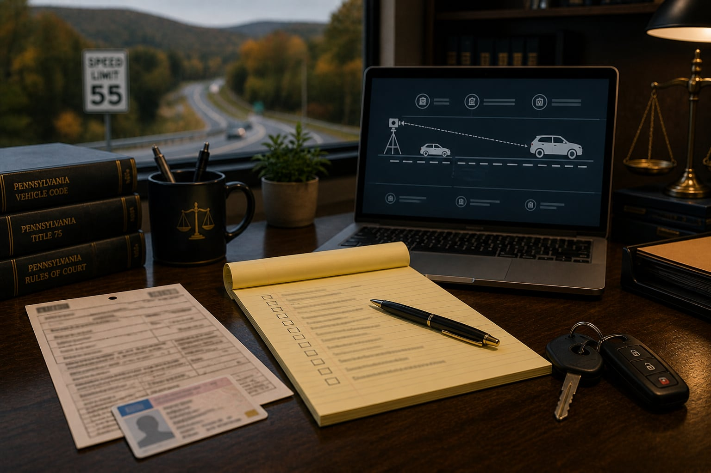

When a notice lists a date
Call with the notice, issue date, effective date, restoration instruction and any related court paper.
680 Wolf Avenue, Easton, PA 18042
610-258-3757Pennsylvania license suspension questions
A driver's license problem may come from PennDOT, a DUI, a traffic citation, points, a missed response, restoration requirements or another court-related issue. The first step is to read the exact notice and identify every date, requirement and agency listed.
What to do now
The court case and the license record may not move together. Bring both sets of papers.
Call with the notice, issue date, effective date, restoration instruction and any related court paper.
Bring PennDOT letters, envelopes, restoration requirements, citations, testing papers and proof of anything already filed or completed.
Do not rely on memory or an old letter to decide whether you may drive. Current status should be checked from the actual record.
Tell the office whether driving affects work, childcare, medical care, school or court obligations.
License and restoration records
PennDOT notices can include dates, restoration steps, appeal information, points, testing-related issues, ignition interlock references or requirements that depend on the driver's history. Court paperwork may create a separate schedule.
A DUI or traffic case can affect license status differently from the court case itself. PennDOT mail, restoration letters, ignition-interlock references and appeal instructions should be read with the court papers because one track may move while the other is still pending.
For DUI and traffic cases, the legal discussion should identify the citation or charge, the county, the court date, PennDOT action, prior driving history and current license status. A license issue may affect work and daily life, but the website cannot decide the correct response for a specific driver.
SVMB Law helps Lehigh Valley drivers organize PennDOT notices, court papers and restoration records so the next legal and practical questions can be reviewed in order.
PennDOT and court records
A restoration letter, suspension notice, limited-license question or ignition-interlock reference should be read from the paper itself. Requirements can depend on the driving history and the specific reason for the suspension.
If a criminal or traffic case is also pending, bring both court papers and PennDOT paperwork so the timing can be reviewed together.

Bring the full notice, including issue date, effective date, restoration instructions and appeal information if listed.
Identify whether the license issue relates to a DUI, traffic citation, summary appeal, unpaid obligation or another court matter.
Bring proof of completed requirements, payments, treatment, testing, insurance or interlock paperwork if any.
Explain whether the license affects employment, CDL status, caregiving, school, medical care or other daily obligations.
Do not assume status from an old letter. Current driving status may need to be checked against the official record.
Send only basic contact information until the office confirms a conflict check and tells you what documents to provide.
Related DUI and traffic guides
Use these pages when the license issue is connected to a charge, citation, hearing or summary appeal.
Court and PennDOT questions after DUI or traffic papers arrive.
Open DUI and trafficEligibility and document questions after a DUI or lower-level criminal charge.
Open ARD guideCitations, points, hearing notices and appeal preparation.
Open traffic guideLast updated
Last reviewed May 2026. This page is general information, not legal advice for a specific situation. If a paper lists a date or required action, use that paper as the starting point when you call.